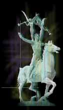

 chaos
chaos
drowning of Hy-brasyl
We live on a placid island of ignorance in the midst of black seas of infinity, and it was not meant that we should voyage far. … we shall go mad … or flee from the deadly light into the peace and safety of a new dark age.
- H. P. Lovecraft
Hy-brasyl split. People horded nature; for the power found therein. A few harnessed magic and ruled thereby. The new rulers ground stones into potions and advanced the art of war into more deadly swords. Agricultural flourished for the purpose of supporting armed assault; all to horde the power locked in the elements.
The first ill-star was recorded. A star was seen streaking the sky, and it was noted as a herald of doom. Perhaps such stars had scribed the sky before, yet never was one watched intently for signs of good or ill fortune for one's neighbor. Hideous altars were built toward the stars and toward the north, Kadath, where it is said resided the worldly home of the Gods.
Priests arose and foolishly succoured those of Kadath. Fulfilling their own prophecy of doom, men acquired, for the first time, the notice of that which dwells in Kadath. The priests whose prayers toward dark north were answered, went mad. Others may have, we shall never know, for they disappeared into the dark north forever. Wise men left Hy-brasyl, now corrupt, avoiding the corrupt men and the things with which they dealt.
Meanwhile, the magician's balance of nature was destroyed. Elements were employed to war with others. Air, Water, Earth, and Fire assaulted neighbors. Thus, Hy-brasyl drowned. Shadows crossed over the day, and all became as night. People turned to look but could not find light of day or star. A rumble emerged, as waves climbed higher, the water flooding the streets, the cities, and the tallest towers.
Only the fastest that fled the drowning city survived. They scored the land with their labor. Some stumbled onto or sought out the wise men who had left earlier. The people ignored the cause of chaos and sought the comfort that was Hy-brasyl in its glory.
A few of the less wise of the men became kings. Three lasting civilizations were born. Finach, presently known as Mileth. Sarnath, presently known as Gear Inbhir, and Niara. Crusades against neighbors arose, from which only the few in power or seclusion escaped toil, disease and death. Conquest became their religion. Elemental magic scattered the mountains and rained stardust on the heads of enemies.